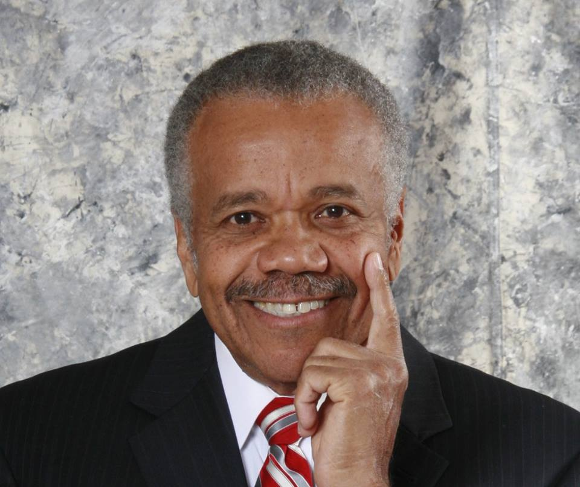

About Me
Reginald (Reggie) Owens is a Talent Development and Project Management Professional. His principal focus is the increase of personal and interpersonal effectiveness in human interactions and the development of leadership and management skills by linking human performance with business strategies. He has over 20 years of human resource management and development experience in the areas of change management, organization development, behavioral assessment, management and leadership development, interpersonal and team effectiveness, communications skills, conflict management, effective customer service and problem solving and decision-making. He has work experience with petrochemical, manufacturing, utility, public sector, education and non-profit organizations.
Reggie holds a Master’s degree in Business Administration from the Weatherhead School of Management at Case Western Reserve University (CWRU) and an undergraduate degree in Political Science from Ohio University in Athens, Ohio. He has studied at the European International Institute at University of Manchester, Manchester Business School, Manchester, England; the European Foundation for Management Development, Brussels, Belgium; and the Czech Management Center, Prague, Czech Republic through a joint program with CWRU and the University of Manchester.é. Reggie has served in a variety of leadership roles in professional and community organizations. He currently serves as the Vice President of Marketing for the Organization Development Connection (ODC) and is a past Vice President of Administration for the National Black MBA Association, Cleveland Chapter. He is a member of the Project Management Institute (PMI) and the Association for Talent Development (ATD.)
For the American Society for Training and Development (ASTD) (now ATD, Association for Talent Development), Greater Cleveland Chapter, he served as President-elect, Vice President-Finance, and Vice President -Corporate Relations. He served with ASTD-National as a member of the National Chapter Leadership Design Advisory Team in Washington, D.C.; on the Advisory Council for the University of Wisconsin-Milwaukee’s Executive Education and Strategic Leadership Program; and on the Steering Committee of the Milwaukee Area Technical College’s Advanced Manufacturing Project. Reggie has also held leadership positions with the former Cleveland World Trade Association (CWTA) including Conference Chair, Program Chair and Minority Business Development Chair.
In addition, Reggie is Certified as a Master Coach (CMC) through the Behavioral Coaching Institute, New Wales, Australia; a Certified Creative Planning Facilitator through the McNellis Group; holds a Master Level Certification and Accreditation for Emotional Social Intelligence/ Emotional Social Competence Inventory (ESCI) from the Hay Group; and is a Certified Counselor for the Myers Briggs Type Indicator (MBTI) Step I and II through CPP, Inc.